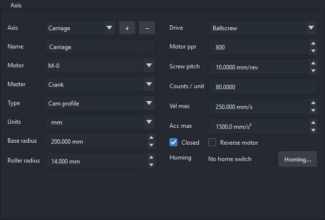
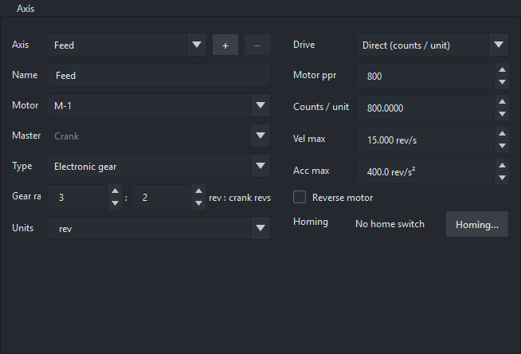
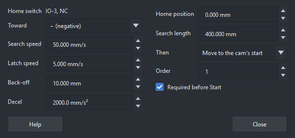
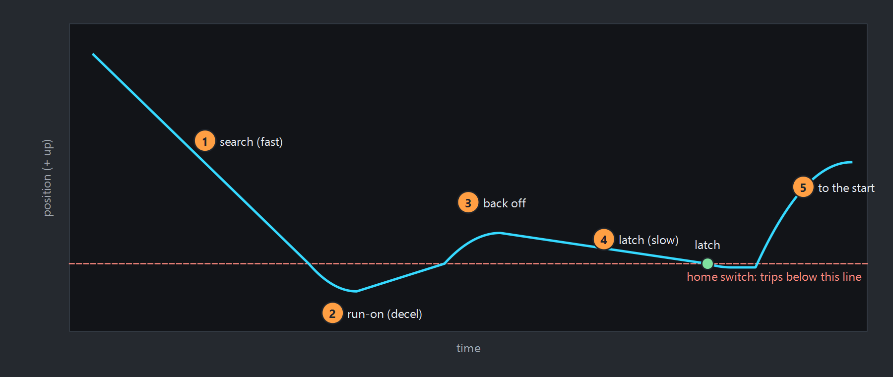

The Axis page holds the selected axis's name, master, motor connector, units, mechanics, limits and cam drawing.

The Axis page: name, master, motor connector, mechanics and limits.
Set Type to Electronic gear for an axis that simply follows the crank at a fixed ratio: a feed roll, a conveyor, a spindle. It has no diagram. Gear ratio is the travel, in this axis's units, for a number of crank revolutions:
A negative ratio makes the axis travel the other way. If the axis travels the right way on paper but its motor is mounted or set up the other way round, use Reverse motor direction instead.

An axis set up as an electronic gear: 3 motor revolutions for every 2 crank revolutions.
Both numbers are whole, and the board keeps the ratio exact: after any number of revolutions, in either direction, the axis is right to the count, however awkward the ratio (3 : 7 does not drift). It starts, ramps, stops and jogs with the crank, from an encoder or a driven crank, and the Analysis page shows its speed and limits as for any axis. The diagram shows one revolution of the crank as a straight line, and neither it nor the Segments table can be edited.
A gear always follows the crank, so Master is fixed. In cut-length mode the crank is the line and the ratio is per cycle as drawn: changing the cut length leaves the gear's speed against the line as it was, so 100 : 1 on a 100 mm design length is 1 mm per mm of line whatever the cut.
The drive turns positions in your units into motor steps (counts per unit):
| Drive | Counts per unit | Example |
|---|---|---|
| Direct | typed in | a rotary table in degrees: 800 steps ÷ 360° = 2.222 |
| Ballscrew | motor steps per rev ÷ screw lead | 800 ÷ 5 mm = 160 counts/mm |
| Belt | motor steps per rev ÷ (π × pulley pitch diameter) | 800 ÷ (π × 25 mm) = 10.19 counts/mm |
Units are free text (mm, in, deg, …); lead and pitch diameter are in the
axis's units. Match motor steps per rev to the ClearPath's input resolution (MSP).
Optional velocity and acceleration limits (per second). With them set:
Analysis shows each axis's peak motor rpm and step rate, and a driven crank's motor rpm. Keep them inside the motor's rating; for a first run on the bench, well below it.
For a crank axis, base radius and roller radius shape the plate cam in the cam view and the DXF export only. A larger base circle lowers the pressure angle; a roller larger than the cam's smallest curvature radius undercuts (Analysis warns).
Tick Reverse motor on the Axis page if a motor turns the wrong way, and Upload. For a driven crank the same box is on the Crank page. Set it with the motor free of the machine, or at low speed, the first time.
Only the motor changes: the diagram, the positions and the Analysis stay as drawn, so positive still means positive travel of the axis. Two motors can also differ because a drive is set up the other way round in its own software; this box covers that too.
When the board starts, it doesn't know where an axis is: it takes every axis to be at the profile's start. Homing finds out. The board drives the axis to its home switch, catches the exact point where the switch trips, and sets the axis's position there. From then on the axis's positions are real, every time.
It needs a home switch: an input with the Home job for the axis, on the Inputs or CCIO-8 page. The switch wizard sets one up and proves it, and can set up homing too. The Homing row on the Axis page shows the switch; Homing… opens the settings:

The Homing window of an axis: the switch, the speeds, and what to do after homing.

Homing toward −: the axis's position over time.
Limits stay active all the way. Homing fails, with the fault home failed on X: … and the motors still enabled, if a limit trips first, the search runs past its Search length, or the switch doesn't release.
| Toward | Which way the switch is: − or +. |
| Search speed | The search and the back-off. 10 % of the axis's jog speed to begin with: set it to suit the machine before homing it. |
| Latch speed | The last, slow move onto the switch: slower repeats better. |
| Back-off | How far past the switch's release it backs off before the slow move. |
| Decel | How hard it stops on reaching the switch, after the search and after the latch. The axis runs on past the switch by speed² ÷ (2 × decel): at 100 mm/s and 2000 mm/s², 2.5 mm. As axis jog uses the axis's Acc max, or the search speed in a quarter second (100 mm/s: 12.5 mm). Leave that much room between the switch and the hard end. |
| Home position | The axis's position at the switch's edge, measured like the diagram (the profile's start is 0). |
| Search length | The longest search: past it, homing fails. Set it a little over the axis's travel. Until the switch searches until the switch or a limit; Analysis warns when there is no limit that way. |
| Then | Move to the cam's start, so Start can go, or Stay at the switch. |
| Order | For Home all: lower numbers home first, the same number together (a Z axis up before X moves, say). |
| Required before Start | The board refuses Start until the axis has homed since its motor was enabled. |
Home from Axis jog (Home on an axis's card, Home all at its foot),
from Home in the strip at the foot of the main window (every axis with a switch, in order), from a PLC (the HOME
bit), or with axhome on the console. Stop stops it. An axis stays homed until its motor is disabled,
a fault disables the motors, it is zeroed, a new profile is uploaded or the board restarts: a disabled ClearPath can be
turned by hand, so the board can't vouch for its position after that. An axis left at the switch (Stay) is off
its cam position, so Start waits until it is moved there (To cam position).
Before homing a real machine, set the speeds, the decel and a search length. A project from before homing existed starts with defaults worked out from the axis's jog limit, which can be far too fast for a machine.